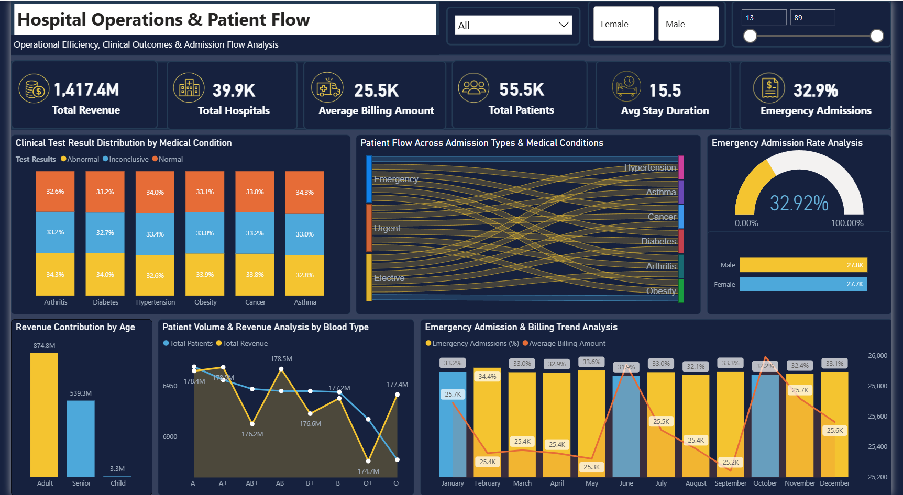
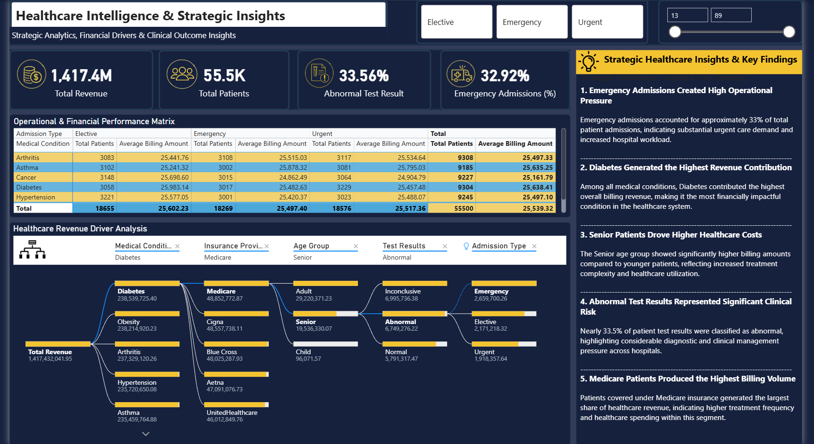

🏥 Healthcare Operations &
Patient Flow Analysis
Total Patients
Total Revenue
Total Hospitals
Emergency Admission Rate
Abnormal Test Result Rate
Avg Billing Amount



The Insight That Changed Everything
When the data was fully modeled, one finding stood out above all others: Emergency, Elective, and Urgent admissions split almost exactly 33/33/33 across every single medical condition — Arthritis, Asthma, Cancer, Diabetes, Hypertension, and Obesity.
This is statistically unusual. Admission types should vary meaningfully by condition severity. A perfectly uniform triage split across 6 completely different conditions points to a systemic triage pattern — not organic clinical decision-making. This became the most important strategic finding in the entire project.
This segment carries maximum operational pressure and clinical risk
Emergency Admissions Created High Operational Pressure
Nearly 1 in 3 admissions was an emergency — creating sustained, measurable pressure on hospital capacity, staffing, and resources that wasn't being tracked at the executive level.
32.92% Emergency RateDiabetes Generated the Highest Revenue Contribution
Among all 6 conditions, Diabetes contributed the highest billing revenue. But average billing per patient was nearly identical across all conditions — proving volume, not treatment complexity, drives revenue.
₹238.5M — Diabetes Top RevenueSenior Patients Drive Higher Per-Visit Costs
Adult patients contributed more total revenue (₹874.8M vs ₹539.3M), but Senior patients showed significantly higher billing per visit — reflecting increased treatment complexity and utilization.
Adults ₹874.8M vs Seniors ₹539.3M TotalAbnormal Test Results Represent Significant Clinical Risk
33.56% of all patient test results were abnormal — nearly 1 in 3. This rate was consistent across all 6 medical conditions, suggesting a systemic diagnostic pattern requiring clinical management attention.
33.56% Abnormal Rate Across All ConditionsMedicare Produced the Highest Billing Volume
Medicare patients generated the largest share of total healthcare revenue among all 5 insurance providers — indicating higher treatment frequency and spending compared to Cigna, UHC, Blue Cross, and Aetna.
Medicare — Top Insurance by Billing VolumeThe 33/33/33 Triage Pattern — A Systemic Anomaly
Emergency, Elective, and Urgent admissions split almost perfectly equal across every single medical condition. This uniformity is statistically improbable and points to systemic triage behavior warranting clinical investigation.
33.7% Urgent · 32.9% Emergency · 33.4% ElectiveClinical Alerts & Early Warning Signals
- Abnormal test results at 33.56% — consistent across all 6 conditions — indicates possible systemic diagnostic pressure, not condition-specific anomalies
- Emergency admissions at 32.92% are unsustainably high — operational planning must account for this as baseline demand, not exceptional surges
- Senior patient billing significantly exceeds younger cohorts per visit — long-term cost trajectory requires proactive resource allocation planning
-- 1. Revenue breakdown by medical condition and admission type SELECT MedicalCondition, AdmissionType, COUNT(*) AS TotalPatients, SUM(BillingAmount) AS TotalRevenue, ROUND(AVG(BillingAmount), 2) AS AvgBilling, ROUND(COUNT(*) * 100.0 / SUM(COUNT(*)) OVER(), 2) AS AdmissionShare FROM PatientRecords GROUP BY MedicalCondition, AdmissionType ORDER BY TotalRevenue DESC; -- 2. Emergency admission rate by condition and gender SELECT MedicalCondition, Gender, COUNT(*) AS TotalAdmissions, SUM(CASE WHEN AdmissionType = 'Emergency' THEN 1 ELSE 0 END) AS EmergencyCount, ROUND( SUM(CASE WHEN AdmissionType = 'Emergency' THEN 1.0 ELSE 0 END) / COUNT(*) * 100, 2 ) AS EmergencyRate FROM PatientRecords GROUP BY MedicalCondition, Gender ORDER BY EmergencyRate DESC; -- 3. Abnormal test result isolation — highest risk segment SELECT MedicalCondition, AgeGroup, InsuranceProvider, COUNT(*) AS TotalPatients, SUM(CASE WHEN TestResult = 'Abnormal' THEN 1 ELSE 0 END) AS AbnormalCount, ROUND( SUM(CASE WHEN TestResult = 'Abnormal' THEN 1.0 ELSE 0 END) / COUNT(*) * 100, 2 ) AS AbnormalRate, SUM(BillingAmount) AS TotalBilling FROM PatientRecords WHERE AdmissionType = 'Emergency' AND AgeGroup = 'Senior' GROUP BY MedicalCondition, AgeGroup, InsuranceProvider ORDER BY AbnormalRate DESC;
import pandas as pd import seaborn as sns import matplotlib.pyplot as plt import numpy as np # ── Data Cleaning & Feature Engineering ── df = pd.read_csv('healthcare_records.csv') df.dropna(subset=['BillingAmount', 'AdmissionType'], inplace=True) df['AgeGroup'] = pd.cut(df['Age'], bins=[0, 17, 60, 120], labels=['Child', 'Adult', 'Senior']) # ── Abnormal test result heatmap by condition & age group ── pivot = df[df['TestResult'] == 'Abnormal'].pivot_table( values='PatientID', index='MedicalCondition', columns='AgeGroup', aggfunc='count' ) sns.heatmap(pivot, annot=True, fmt='d', cmap='YlOrRd', linewidths=0.5) plt.title('Abnormal Test Results — Condition vs Age Group') plt.tight_layout() plt.show() # ── Revenue bridge: Total → Emergency → Elective → Urgent ── rev_by_type = df.groupby('AdmissionType')['BillingAmount'].sum() / 1e6 colors = ['#F5C518', '#5BB8F5', '#fda4af'] rev_by_type.plot(kind='bar', color=colors, edgecolor='none', figsize=(8,5)) plt.title('Revenue by Admission Type (₹M)') plt.ylabel('Revenue (₹M)') plt.xticks(rotation=0) plt.tight_layout() plt.show() # ── Triage uniformity test — 33/33/33 validation ── triage_by_condition = df.groupby( ['MedicalCondition', 'AdmissionType'] )['PatientID'].count().unstack() triage_pct = triage_by_condition.div(triage_by_condition.sum(axis=1), axis=0) * 100 print(triage_pct.round(2)) # Reveals the 33/33/33 anomaly
// Emergency Admission Rate % Emergency Rate % = DIVIDE( CALCULATE(COUNTROWS(Patients), Patients[AdmissionType] = "Emergency"), COUNTROWS(Patients) ) * 100 // Abnormal Test Result Rate % Abnormal Rate % = DIVIDE( CALCULATE(COUNTROWS(Patients), Patients[TestResult] = "Abnormal"), COUNTROWS(Patients) ) * 100 // Revenue Contribution % by Medical Condition Revenue Share % = DIVIDE( SUM(Patients[BillingAmount]), CALCULATE(SUM(Patients[BillingAmount]), ALL(Patients[MedicalCondition])) ) * 100 // Clinical Risk Score per patient (composite) Clinical Risk Score = VAR EmergencyRisk = IF(Patients[AdmissionType] = "Emergency", 0.35, 0) VAR AbnormalRisk = IF(Patients[TestResult] = "Abnormal", 0.30, 0) VAR AgeRisk = IF(Patients[AgeGroup] = "Senior", 0.20, IF(Patients[AgeGroup] = "Child", 0.15, 0)) VAR ConditionRisk = IF(Patients[MedicalCondition] IN {"Diabetes", "Cancer"}, 0.15, 0) RETURN EmergencyRisk + AbnormalRisk + AgeRisk + ConditionRisk // Month-over-Month Revenue Change % MoM Revenue Change % = VAR CurrentMonth = SUM(Patients[BillingAmount]) VAR PrevMonth = CALCULATE(SUM(Patients[BillingAmount]), DATEADD(Calendar[Date], -1, MONTH)) RETURN DIVIDE(CurrentMonth - PrevMonth, PrevMonth) * 100
1 Investigate the 33/33/33 Triage Anomaly
A perfectly equal admission split across all conditions is statistically improbable. Conduct a clinical audit to determine whether triage protocols are functioning as intended or defaulting to systematic behavior.
Clinical Process Integrity2 Prioritize Diabetes Operational Planning
Diabetes generates the highest revenue at ₹238.5M but also carries the highest patient volume. Dedicated specialist capacity, optimized admission workflows, and targeted care protocols should be prioritized.
Maximize Revenue Quality3 Build a Senior Patient Care Pathway
Senior patients cost significantly more per visit and represent a growing revenue segment. Dedicated pathways with geriatric specialists, faster triage, and post-discharge monitoring can reduce readmissions and billing leakage.
Reduce Per-Visit Cost Overrun4 Address Abnormal Test Result Backlog
With 33.56% of all results classified as abnormal across every condition, clinical management capacity is under systemic strain. A centralized follow-up protocol would prevent diagnostic risk from becoming patient outcome risk.
Reduce Clinical Risk Exposure5 Negotiate Medicare Contract Terms
Medicare generates the highest billing volume of all 5 providers. Renegotiating reimbursement terms or creating tiered service agreements specifically for Medicare patients could materially improve net revenue.
Revenue Optimization6 Shift from Reactive to Predictive Operations
The consistent 12-month patterns in emergency admissions and billing indicate predictable seasonal demand. Deploying predictive staffing and resource models — rather than reactive planning — would reduce operational cost and improve patient outcomes.
Long-Term Efficiency Gain- SQL — Revenue analysis, patient admission cohorts, emergency tracking, clinical test result segmentation, billing & operational KPI extraction across 8 query categories
- Python (Pandas, NumPy, Seaborn, Matplotlib) — Data cleaning, feature engineering, EDA, abnormal result heatmaps, revenue bridge visualizations, and triage anomaly validation
- Power BI — 3-module interactive dashboard with Sankey patient flow, decomposition tree, gauge charts, treemaps, slicers, and cross-filtering across all visuals
- DAX — Emergency rate, abnormal rate, clinical risk scores, revenue share %, MoM change measures, and dynamic KPI calculations
- Data Modeling — Star schema design, table relationships, cardinality management across patient, hospital, doctor, and billing dimensions
- Analytical Report — 8-page executive report with findings, KPI commentary, and strategic recommendations built for C-suite consumption